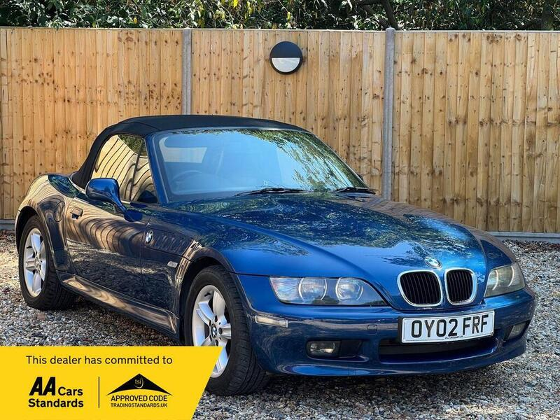
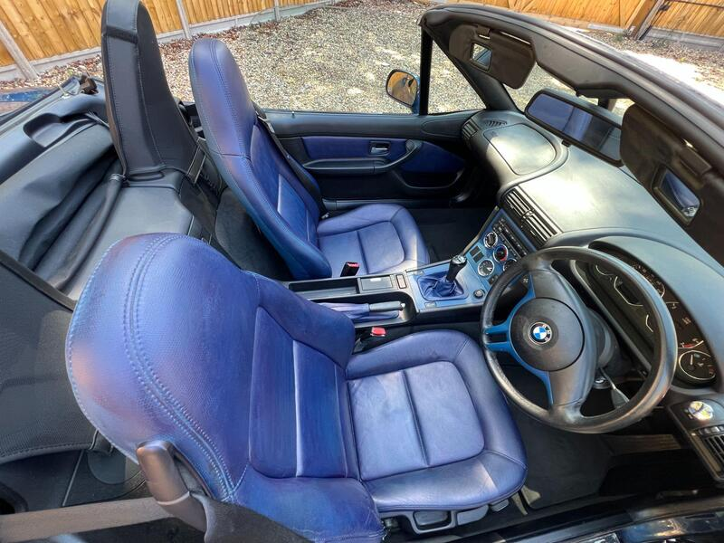
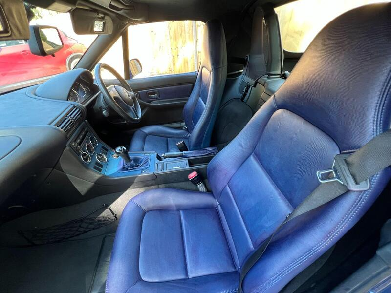
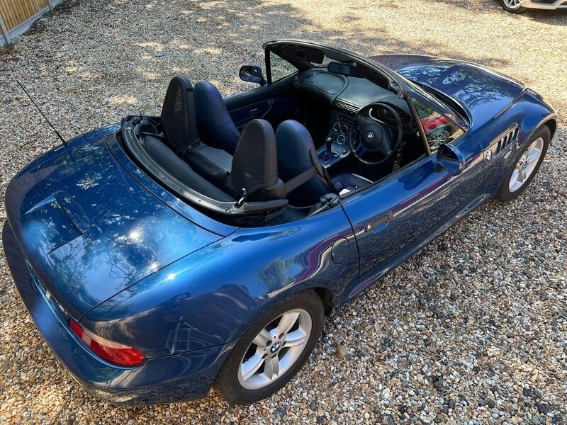

Seller photos from the AutoTrader ad.
BMW Z3 2002
The closest car. A low-mileage Z3 at the £3k limit.
Key facts
| Price | £3,000 |
|---|---|
| Year | 2002 |
| Miles | 71,000 |
| Model | BMW Z3 |
| Colour | Blue |
| Registration | 2002 (02 reg) |
| Owners | 2 owners |
| Service history | Not stated |
| MOT (seller's text) | Not stated |
| Seller | Trade |
| Location | Cranleigh |
| From GU7 | 7 mi (AutoTrader) |
| Checked | 15 October 2026 |
Why buy it
- Only 7 mi from GU7, 71k miles
- 1.9 four-cylinder, simple to run
Things to check
Trade ad text is generic, so ask for the history and MOT
Check the cooling system history
- BMW Z3 1.9 weak spots
'Not as much of a rust trap as a contemporary MX5 or MG TF'; check arches, sills, rear suspension mounts, boot floor. Simple and robust; cooling plastics – an overheat can turn a pump job into a head gasket; timing-chain rattle, oil leaks.
Seller says (extract)
“This 2002 BMW Z3 i offers a classic driving experience that remains accessible for a wide range of motorists. As a well-maintained example of this iconic roadster, it features a 1.9 litre petrol engine that provides a balanced performance suitable for both daily commutes and weekend drives. The vehicle combines the traditional BMW build quality with a design that prioritises driver engagement, making it a practical choice for those who appreciate a straightforward and reliable sports car. What sets this particular model apart from many other sports cars of its era is its focus on running costs and efficiency. It benefits from a low insurance group rating, which helps to keep annual premiums more manageable for the owner. Furthermore, the engine is designed with low CO2 emissions in mind, offering a more environmentally conscious option without compromising the enjoyment of the drive. These attributes make the Z3 i a sensible yet enjoyable choice for anyone looking to own a piece of motoring history while keeping ongoing expenses in check. 71,000 miles which is extremely low for the age of the vehicle, good body work and long mot check out the full video on our website alongside many other cars www.flatoutcars.co.uk…”